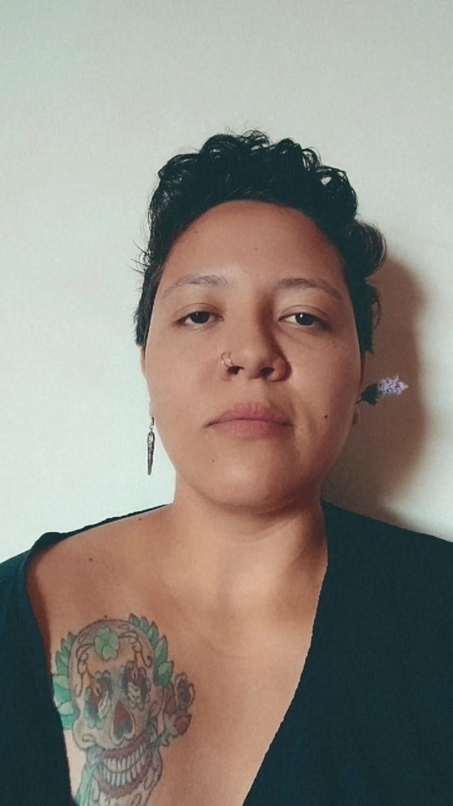

Sobre

Paulistana de 30 anos, Marina é formada em Imagem e Som pela Universidade Federal de São Carlos - UFSCar.
Tem experiência em Produção Audiovisual e Produção de Eventos, além de já ter atuado como professora de Inglês.
Atualmente, é aluna do curso de Desenvolvimento Web Full Stack na Labenu.
Minhas Habilidades
- Fluência em Inglês
- HTML - nível básico
- CSS - nível básico
- Liderança
- Proatividade
- Espírito de Equipe
- Boa Comunicação
- Inteligência Emocional